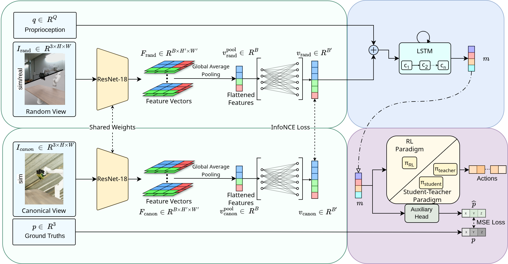

Visuomotor policies for multi-fingered dexterous manipulation are notoriously sensitive to camera viewpoint shifts, typically requiring rigid, laboratory-grade calibration for successful deployment. Conventional strategies for achieving viewpoint robustness typically rely on either explicit 3D sensing, which introduces complex hardware dependencies, or exhaustive data collection from varied perspectives, which induces significant variance during policy opti mization. We propose AnyViewDex, a joint representation learning framework that enables robust, view-invariant dexterous grasping using solely monocular RGB observations. To resolve the geometric ambiguities of 2D vision with out relying on test-time depth sensors or prohibitively large multi-view datasets, AnyViewDex leverages an asymmetric training pipeline. We regularize a stan dard monocular backbone with auxiliary 3D geometric supervision derived en tirely from privileged simulation data, anchoring the visual representation in the physical workspace. This strategy enables the network to implicitly infer the 3D spatial relationships required for dexterity from uncalibrated 2D projections.
We evaluate our framework across reinforcement learning and student-teacher distillation paradigms, consistently matching the performance of depth-reliant methods. Finally, we demonstrate zero-shot sim-to-real transfer on a physical xArm7 equipped with a 16-DoF LEAP Hand, achieving robust multi-object grasp ing under varying camera perturbations
We propose AnyViewDex, a view-invariant dexterous manipulation framework that learns robust grasping policies from monocular RGB observations.
The method uses asymmetric training with auxiliary 3D geometric supervision from simulation, allowing the policy to infer stable spatial relationships from 2D inputs without test-time depth.

Across multiple viewpoints and lighting conditions, the policy exhibits consistent task execution. Under severe visual occlusion, however, performance deteriorates, indicating reliance on visual observations for manipulation.
To assess performance under dynamic viewpoints, we record rollouts while continuously moving the camera during execution.
Representative simulation rollouts of the student policy distilled from a privileged teacher policy across multiple viewpoints.